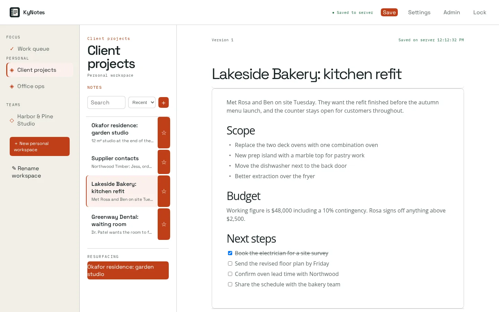
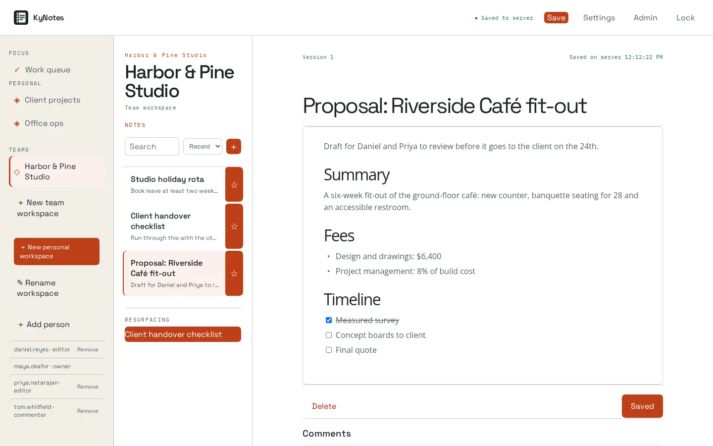

Encrypted content
Notes and attachments are encrypted in your browser. Shared team notebooks use their own keys, wrapped for each member, so neither the server nor the administrator who created your account can read them.
KyNotes / Notes & attachments
Encrypted notes and attachments, hosted on infrastructure you control, with content decrypted in your browser.
Open source (MIT) · Self-hostedScreenshots


Inside KyNotes
Notes and attachments are encrypted in your browser. Shared team notebooks use their own keys, wrapped for each member, so neither the server nor the administrator who created your account can read them.
Organize notebooks into sections, pages, subpages and section groups. Canvas pages add free-form text boxes and pen ink.
Sign in with KyIdentity or another OpenID Connect provider; directory provisioning disables people who leave. Administrator accounts are kept apart from everyday accounts and cannot open note content.
Add a browser or device with a one-time key bundle, released only after you confirm a matching check code on both screens.
Administration includes recovery-key pinning, scheduled backups to KyRecovery, local sealed copies and restore drills.
Deploy the service yourself and choose the access, storage and operational setup that fits your environment.
How it fits together
A database capsule alone does not recover attachments or note history. Back up the encrypted blob store separately, with restic or the built-in mirror, and follow the restore guide.
Read the Busnes.app privacy policy. For data on an independently operated installation, contact its operator.
Next step
The project documentation is the place for current requirements and instructions.